5 Spatial Interpolation
A lot of environmental data is captured in point samples, which might be from soil properties, the atmosphere (like weather stations that capture temperature, precipitation, pressure, and winds), properties in surface water bodies or aquifers, etc. While it’s often useful to just use those point observations and evaluate spatial patterns of those measurements, we also may want to predict a “surface” of those variables over the map, and that’s where interpolation comes in.
In this section, we’ll look at a few interpolators – nearest neighbor, inverse distance weighting (IDW) and kriging – but the reader should refer to more thorough coverage in Jakub Nowosad’s Geostatistics in R (Nowosad (n.d.)) or at https://rspatial.org. For data, we’ll use the Sierra climate data and derive the annual summaries that we looked at in the last chapter.
We’ll be working in the Teale Albers projection, which is good for California, in metres (Figure 5.1), so we’ll start by reprojecting Sierra data we created earlier (??) using st_transform.
Teale<-paste0("+proj=aea +lat_1=34 +lat_2=40.5 +lat_0=0 +lon_0=-120 ",
"+x_0=0 +y_0=-4000000 +datum=WGS84 +units=m")
sierra <- st_transform(sierraAnnual, crs=Teale)
counties <- st_transform(CA_counties, crs=Teale)
sierraCounties <- st_transform(sierraCounties, crs=Teale)
ggplot() +
geom_sf(data=counties) +
geom_sf(data=sierraCounties, fill="grey", col="black") +
geom_sf(data=sierra, aes(col=PRECIPITATION))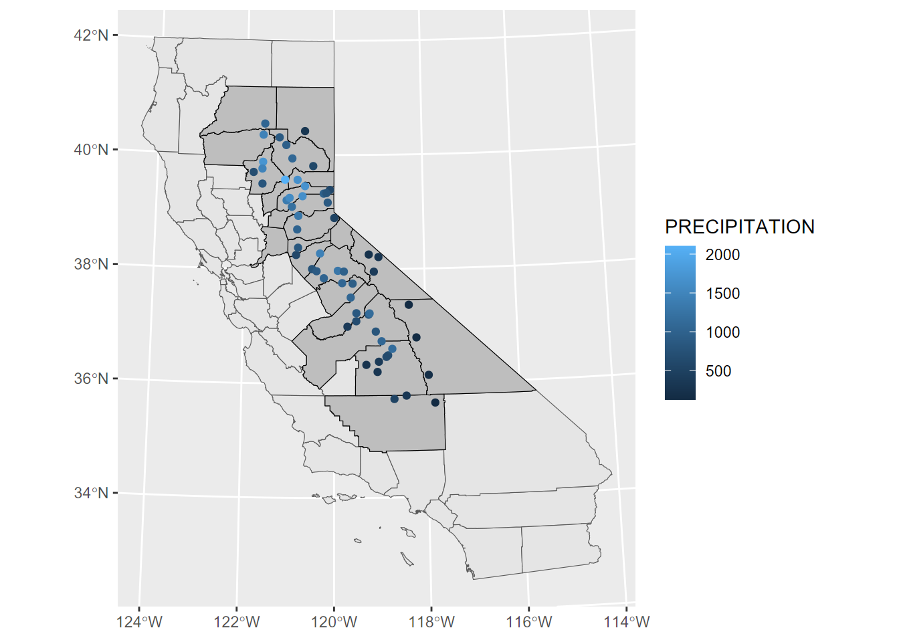
FIGURE 5.1: Precipitation map in Teale Albers in Sierra counties
5.1 Null Model of the Original Data
We’ll start by creating a “null model” of the z intercept, z being precipitation, as the root mean squared error (RMSE) of individual precipitation values as compared to the mean. (This is the same as the standard deviation if we could assume that were dealing with a population instead of a sample, so we’ll borrow that symbol \(\sigma\).) We’ll then compare this with the RMSE of our model predictions to derive relative performance, since the models should have lower RMSE than the overall standard deviation.
\[ \sigma =\sqrt{\frac{\sum_{i=1}^{n}{(z_i-\bar{z})^2}}{n}} \]
RMSE <- function(obs, pred) {
sqrt(mean((obs-pred)**2, na.rm=TRUE))
}
null <- RMSE(mean(sierra$PRECIPITATION), sierra$PRECIPITATION)
null## [1] 460.6205The term “null model” can be confusing unless you consider that it’s related to a null hypothesis of random variation about the mean. Note that it’s not exactly the same as R’s sd() function, which assumes you have a sample, not the population, and uses \(n-1\) instead of \(n\) in the equation, as we can see here …
## [1] 464.6435… and resolve null back to the sample standard deviation by multiplying by \(\sqrt{\frac{n}{n-1}}\):
## [1] 464.64355.2 Voronoi Polygon
We’re going to develop a simple prediction using Voronoi polygons (Voronoi (1908)), so we’ll create these and see what they look like with the original data points also displayed (Figure 5.2). Note that we’ll need to convert to S4 objects using vect():
library(terra)
# proximity (Voronoi/Thiessen) polygons
sierraV <- vect(sierra)
v <- voronoi(sierraV)
plot(v)
points(sierraV)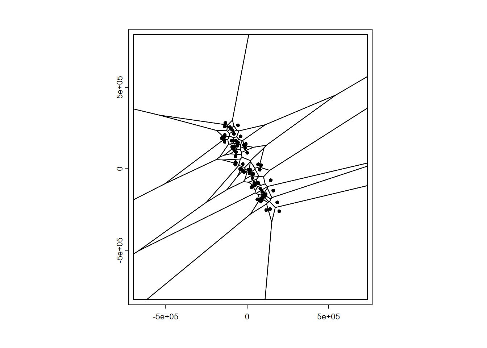
FIGURE 5.2: Voronoi polygons around Sierra stations
Voronoi polygons keep going outward to some arbitrary limit, so for a more realistic tesselation, we’ll crop out the Sierra counties we selected earlier that contain weather stations. Note that the Voronoi polygons contain all of the attribute data from the original points, just associated with polygon geometry now.
Now we can see a map that displays the original intent envisioned by the meteorologist Thiessen (Thiessen (1911)) to apply observations to a polygon area surrounding the station (Figure 5.3). Voronoi polygons or the raster determined from them (next) will also work with categorical data.
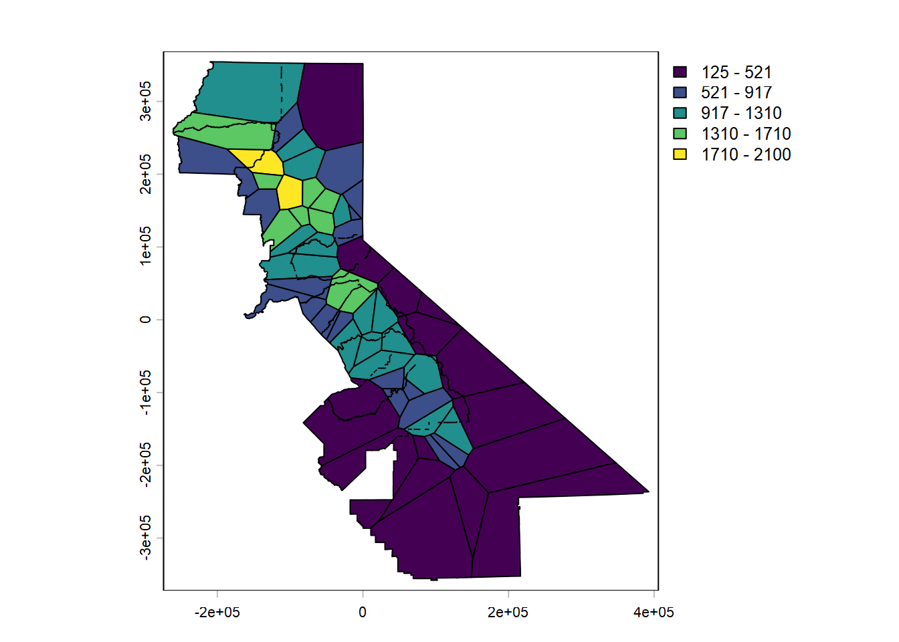
FIGURE 5.3: Precipitation mapped by Voronoi polygon
Now we’ll rasterize those polygons (Figure 5.4). We’ll start by building a blank raster of given dimensions of our selected counties, with a resolution of 1000 m.
# rasterize
r <- rast(vSierra, res=1000) # Builds a blank raster
vr <- rasterize(vSierra, r, "PRECIPITATION")
plot(vr)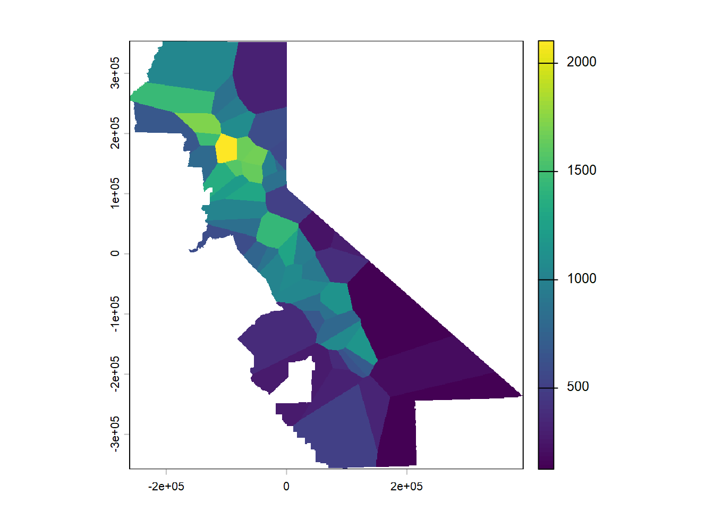
FIGURE 5.4: Rasterized Voronoi polygons
5.2.1 Cross-validation and relative performance
Cross-validation is used to see how well the model works by sampling it a defined number of times (folds) to pull out sets of training and testing samples, and then comparing the model’s predictions with the (unused) testing data. Each time through, the model is built out of that fold’s training data. For each fold, a random selection ?? is created by the sample function. The mean RMSE of all of the folds is the overall result, and provides an idea on how well the interpolation worked. Relative performance is a normalized measure of how well the model compares with the null model, and ranges from 0 (same RMSE as the null model) to 1 (zero error in our model). We’ll use \(\sigma\) to represent the null model, since it’s similar to the standard deviation:
\[perf=1-\frac{\overline{RMSE}}{\sigma}\]
The coding approach for the cross-validation process we’ll use generally follows that documented at https://rspatial.org for use with terra data (Hijmans (n.d.)) and gstat (Pebesma (n.d.)) geostatistical methods.
# k-fold cross-validation
k <- 5
set.seed(42)
kf <- sample(1:k, size = nrow(sierraV), replace=TRUE) # get random numbers
# between 1 and 5 to same size as input data points SpatVector sierraV
rmse <- rep(NA, k) # blank set of 5 NAs
for (i in 1:k) {
test <- sierraV[kf == i, ] # split into k sets of points,
# (k-1)/k going to training set,
train <- sierraV[kf != i, ] # and 1/k to test, including all of the variables
v <- voronoi(train)
v
test
p <- terra::extract(v, test) # extract values from training data at test locations
rmse[i] <- RMSE(test$PRECIPITATION, p$PRECIPITATION)
}
rmse## [1] 470.1564 468.7459 468.6382 203.1462 301.4839## [1] 382.4341## [1] 0.175.3 Nearest Neighbor Interpolation
The previous assignment of data to Voronoi polygons can be considered to be a nearest neighbor interpolation where only one neighbor is used, but we can instead use multiple neighbors (Figure 5.5). In this case we’ll use up to 5 (nmax=5). Presumably setting idp to zero makes it a nearest neighbor, along with the nmax setting .
## x y STATION_NAME LONGITUDE LATITUDE ELEVATION
## 1 105093.88 -168859.68 ASH MOUNTAIN -118.8253 36.4914 520.6
## 2 43245.02 -102656.13 AUBERRY 2 NW -119.5128 37.0919 637
## 3 81116.40 -122688.39 BALCH POWER HOUSE -119.08833 36.90917 524.3
## 4 67185.02 -89772.17 BIG CREEK PH 1 -119.24194 37.20639 1486.8
## 5 145198.34 -70472.98 BISHOP AIRPORT -118.35806 37.37111 1250.3
## 6 -61218.92 140398.66 BLUE CANYON AIRPORT -120.7102 39.2774 1608.1
## PRECIPITATION TEMPERATURE
## 1 688.59 17.02500
## 2 666.76 16.05833
## 3 794.02 16.70000
## 4 860.05 11.73333
## 5 131.58 13.61667
## 6 1641.34 10.95000gs <- gstat(formula=PRECIPITATION~1, locations=~x+y, data=d, nmax=5,
set=list(idp = 0))
nn <- interpolate(r, gs, debug.level=0)
nnmsk <- mask(nn, vr)
plot(nnmsk, 1)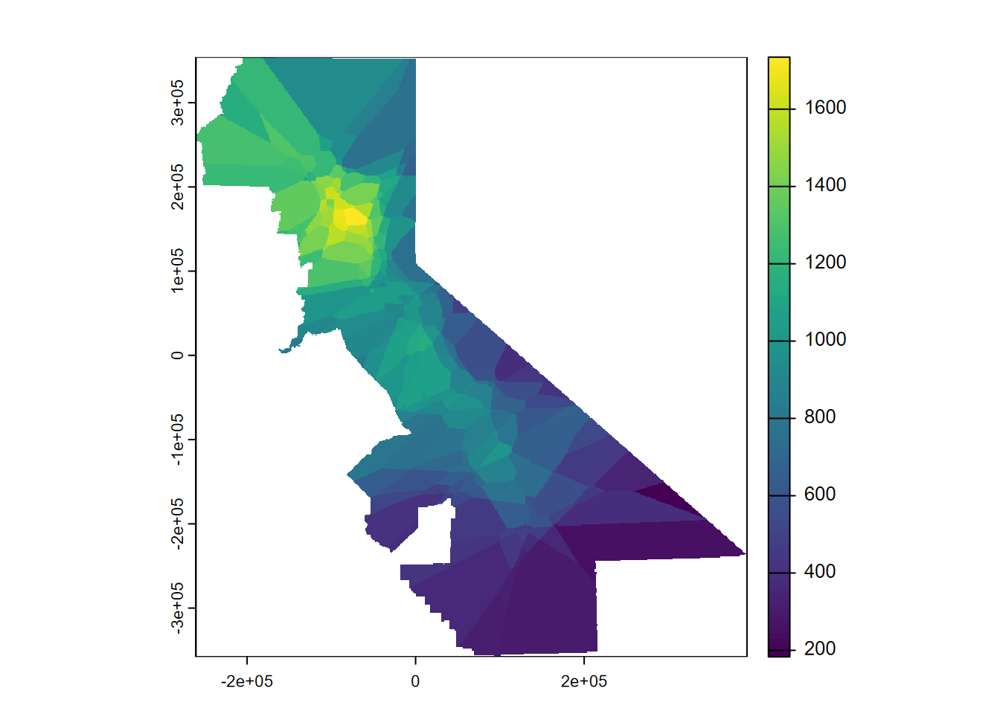
FIGURE 5.5: Nearest neighbor interpolation of precipitation
5.3.1 Cross-validation and relative performance of the nearest neighbor model
Again using cross-validation and deriving relative performance for our nearest neighbor model, the higher RMSE and lower relative performance compared with the Voronoi model suggests that it’s not any better than that single-neighbor model, so we might just stick with that.
rmsenn <- rep(NA, k)
for (i in 1:k) {
test <- d[kf == i, ]
train <- d[kf != i, ]
gscv <- gstat(formula=PRECIPITATION~1, locations=~x+y, data=train,
nmax=5, set=list(idp = 0))
p <- predict(gscv, test, debug.level=0)$var1.pred
rmsenn[i] <- RMSE(test$PRECIPITATION, p)
}
rmsenn## [1] 315.4844 493.9716 583.9471 316.5636 365.5138## [1] 415.0961## [1] 0.098832815.4 Inverse Distance Weighted (IDW)
The inverse distance weighted (IDW) interpolator is popular due to its ease of use and few statistical assumptions. Surrounding points influence the predicted value of a cell based on the inverse of their distance. The inverse distance weight has an an exponent set with set=list(idp=2), and if that is 2 (so inverse distance squared), it is sometimes referred to as a “gravity model” since it’s the same as the way gravity works. For environmental variables, however, sampling locations are not like objects that create an effect but rather observations of a continuous surface. But we’ll go ahead and start with the gravity model, inverse distance power of 2 (Figure 5.6).
library(gstat)
gs <- gstat(formula=PRECIPITATION~1, locations=~x+y, data=d, nmax=Inf,
set=list(idp=2))
idw <- interpolate(r, gs, debug.level=0)
idwr <- mask(idw, vr)
plot(idwr, 1)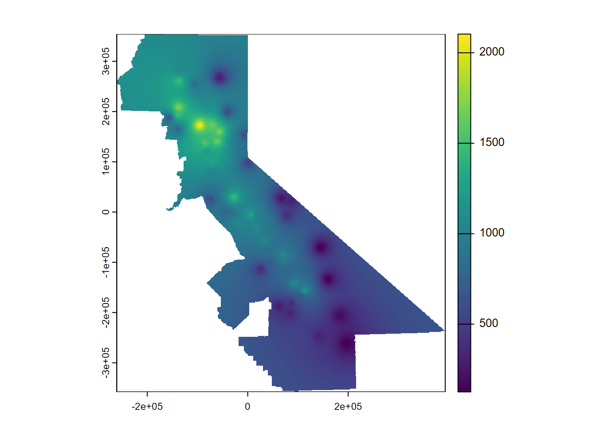
FIGURE 5.6: IDW interpolation, power = 2
5.4.1 Using cross-validation and relative performance to guide inverse-distance weight choice
rmse <- rep(NA, k)
for (i in 1:k) {
test <- d[kf == i, ]
train <- d[kf != i, ]
gs <- gstat(formula=PRECIPITATION~1, locations=~x+y, data=train,
set=list(idp=2))
p <- predict(gs, test, debug.level=0)
rmse[i] <- RMSE(test$PRECIPITATION, p$var1.pred)
}
rmse## [1] 366.3199 393.9248 512.9897 240.9113 360.9724## [1] 375.0236## [1] 0.1858295So what we can see from the above is the IDW has a bit better relative performance (from a lower mean RMSE). The IDW does come with an artifact of pits and peaks around the data points, which you can see in the map, and this effect can be decreased with a lower idp.
5.4.2 IDW: trying other inverse distance powers
A power of 1 might reduce the gravity-like emphasis on the sampling point, so we’ll try that (idp=1) (Figure 5.7):
library(gstat)
gs <- gstat(formula=PRECIPITATION~1, locations=~x+y, data=d, nmax=Inf,
set=list(idp=1))
idw <- interpolate(r, gs, debug.level=0)
idwr <- mask(idw, vr)
plot(idwr, 1)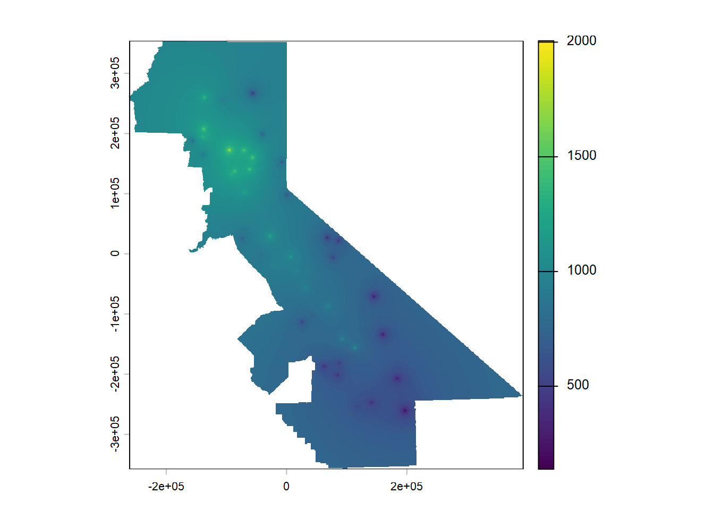
FIGURE 5.7: IDW interpolation, power = 1
rmse <- rep(NA, k)
for (i in 1:k) {
test <- d[kf == i, ]
train <- d[kf != i, ]
gs <- gstat(formula=PRECIPITATION~1, locations=~x+y, data=train, set=list(idp=1))
p <- predict(gs, test, debug.level=0)
rmse[i] <- RMSE(test$PRECIPITATION, p$var1.pred)
}
rmse## [1] 401.7832 412.2137 468.5602 355.0603 410.7361## [1] 409.6707## [1] 0.1106113… but the relative performance is no better. You should continue this experiment by trying other weights (remember to set them the same for the model you’re mapping and for the cross-validation), or you could even loop it to optimize the setting for the highest relative performance, but I’ll leave you to figure that out. Note that the number of folds may also have an impact, especially for small data sets like this.
5.5 Polynomials and Trend Surfaces
In the Voronoi, nearest-neighbor, and IDW methods above, predicted cell values were based on values of nearby input points, in the case of the Voronoi creating a polygon surrounding the input point to assign its value to (and the raster simply being those polygons assigned to raster cells.) Another approach is to create a polynomial model where values are assigned based on their location defined as x and y values. The simplest is first-order linear trend surface model, as the equation of a plane:
\[ z = b_0 + b_1x + b_2y \]
where z is a variable like PRECIPITATION. Higher-order polynomials can model more complex surfaces, such as a fold using a second-order polynomial, which would look like:
\[ z = b_0 + b_1x + b_2y + b_3x^2 + b_4xy + b_5y^2 \]
… or a third-order polynomial which might model a dome or basin:
\[ z = b_0 + b_1x + b_2y + b_3x^2 + b_4xy + b_5y^2 + b_6x^3 + b_7x^2y + b_8xy^2 + b_9y^3 \]
To enter the first order, your formula can look like z~x+y but anything beyond this pretty much requires using the degree setting. For the first order this would include z~1 and degree=1; the second order just requires changing the degree to 2, etc.
We’ll use gstat with a global linear trend surface by providing this formula as TEMPERATURE~x+y, and use the degree setting (Figure 5.8).
library(gstat)
gs <- gstat(formula=PRECIPITATION~1, locations=~x+y, degree=1, data=d)
interp <- interpolate(r, gs, debug.level=0)
prc1 <- mask(interp, vr)
plot(prc1, 1)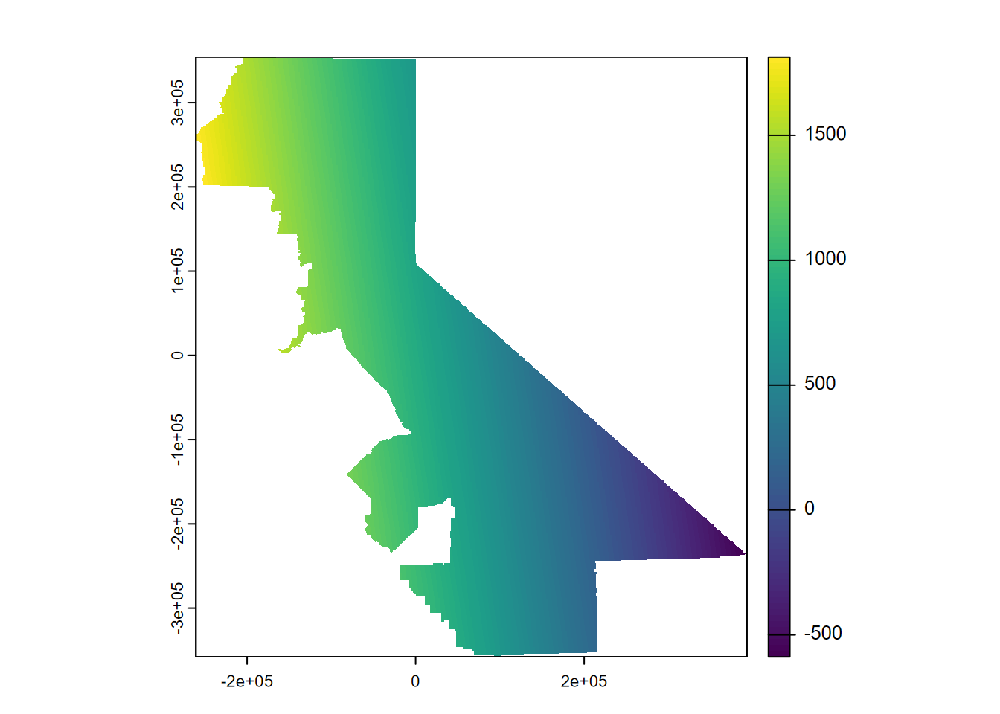
FIGURE 5.8: Linear trend
What we’re seeing is a map of a sloping plane showing the general trend. Not surprisingly there are areas with values lower than the minimum input temperature and higher than the maximum input temperature, which we can check with:
## [1] 125.48## [1] 2103.6… but that’s what we should expect when defining a trend that extends beyond our input point locations.
Then we’ll try a second order (Figure 5.9):
gs <- gstat(formula=PRECIPITATION~1, locations=~x+y, degree=2, data=d)
interp2 <- interpolate(r, gs, debug.level=0)
prc2 <- mask(interp2, vr)
plot(prc2, 1)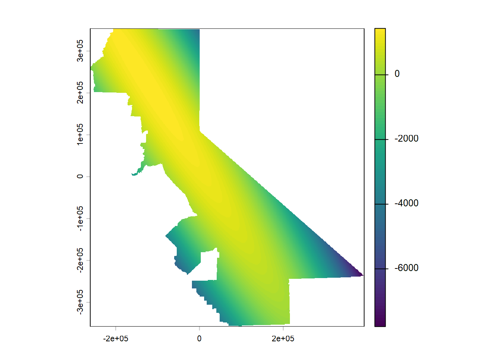
FIGURE 5.9: 2nd order polynomial, precipitation
… which exhibits this phenomenon all the more, though only away from our input data. Then a third order (Figure 5.10)…
gs <- gstat(formula=PRECIPITATION~1, locations=~x+y, degree=3, data=d)
interp3 <- interpolate(r, gs, debug.level=0)
prc3 <- mask(interp3, vr)
plot(prc3, 1)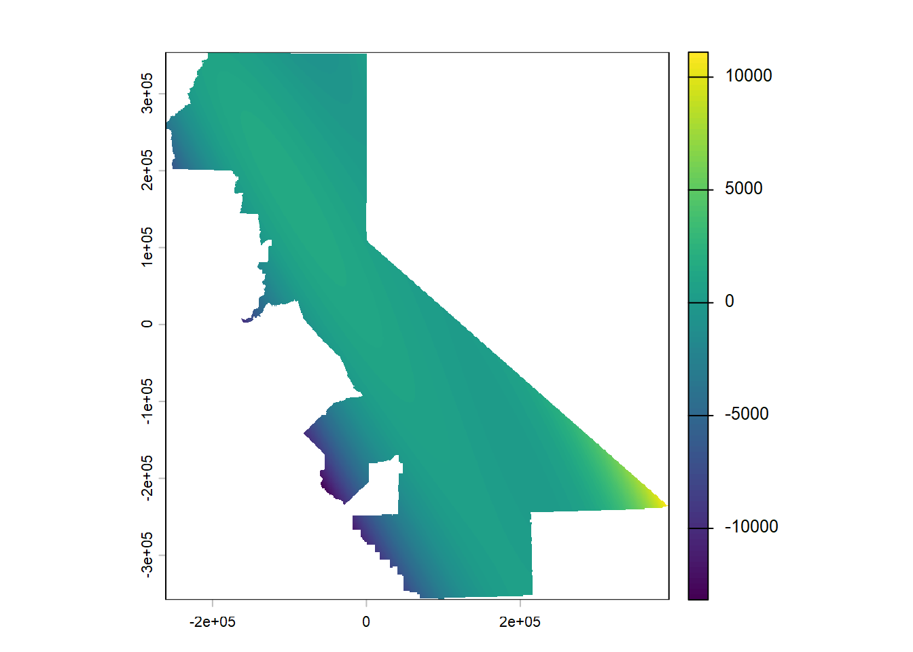
FIGURE 5.10: Third order polynomial, temperature
… extends this to the extreme, though the effect is only away from our data points so it’s just a cartographic problem we could address by controlling the range of values over which to apply the color range. Or we could use map algebra to assign all cells higher than the maximum inputs to the maximum and lower than the minimum inputs to the minimum (Figure 5.11).
prc3$var1.pred[prc3$var1.pred > max(d$PRECIPITATION)] <- max(d$PRECIPITATION)
prc3$var1.pred[prc3$var1.pred < min(d$PRECIPITATION)] <- min(d$PRECIPITATION)
plot(prc3$var1.pred)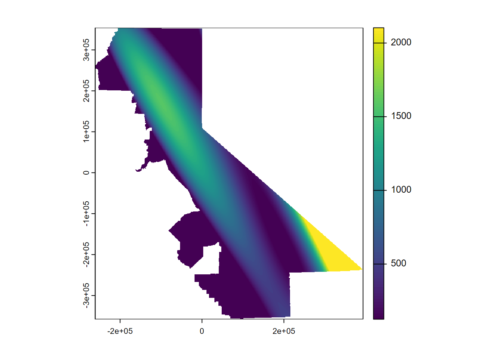
FIGURE 5.11: Third order polynomial with extremes flattened
Then a third order local polynomial (setting nmax to less than Inf), where we’ll similarly set the values outside the range to the min or max value. The nmax setting can be seen to have a significant effect on the smoothness of the result (Figure 5.12).
gs <- gstat(formula=PRECIPITATION~1, locations=~x+y, degree=3, nmax=30, data=d)
interp3loc <- interpolate(r, gs, debug.level=0)
prc3loc <- mask(interp3loc, vr)
prc3loc$var1.pred[prc3loc$var1.pred > max(d$PRECIPITATION)] <- max(d$PRECIPITATION)
prc3loc$var1.pred[prc3loc$var1.pred < min(d$PRECIPITATION)] <- min(d$PRECIPITATION)
plot(prc3loc$var1.pred)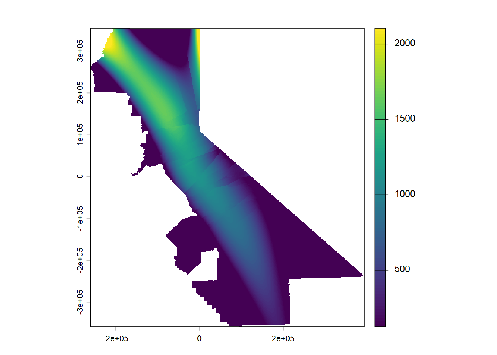
FIGURE 5.12: Third order local polynomial, precipitation
5.6 Kriging
Kriging is a stochastic geostatistical interpolator that provides advantages for considering the statistical probability of results and characteristics of the original data such as spatial autocorrelation, and has been widely applied in fields such as mining (Krige’s application) and considering environmental risk. There’s a lot more to it than we can cover here, and the reader is encouraged to see Nowosad (n.d.) and other works to learn more. Kriging commonly requires a lot of exploratory work with visual interpretation of data to derive the right model parameters. It starts by looking at the variogram and creating a model with parameters to see which might best approximates the distribution.
5.6.1 Create a variogram.
Compare every point to every other point. The width setting (20,000 m) is the subsequent distance intervals into which data point pairs are grouped for semivariance estimates (Figure 5.13).
#p <- data.frame(geom(dtakm)[, c("x","y")], as.data.frame(dta))
gs <- gstat(formula=PRECIPITATION~1, locations=~x+y, data=d)
v <- variogram(gs, width=20e3)
v## np dist gamma dir.hor dir.ver id
## 1 23 14256.47 45143.82 0 0 var1
## 2 60 30035.37 61133.79 0 0 var1
## 3 93 50919.48 163622.47 0 0 var1
## 4 97 71033.67 192267.26 0 0 var1
## 5 126 89759.82 186047.23 0 0 var1
## 6 109 109139.47 192847.68 0 0 var1
## 7 109 130125.18 139241.93 0 0 var1
## 8 91 149596.56 146620.61 0 0 var1
## 9 94 169606.82 150855.26 0 0 var1
## 10 90 188727.78 203683.08 0 0 var1
## 11 57 208856.39 220665.36 0 0 var1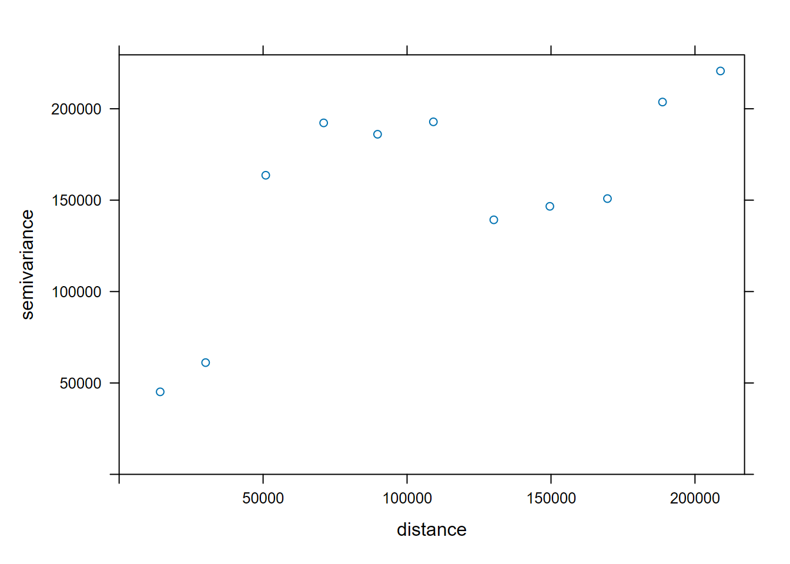
FIGURE 5.13: Variogram of precipitation at Sierra weather stations
5.6.2 Fit the variogram based on visual interpretation
For geostatistical analysis leading to Kriging, we often use visual interpretation of the variogram to find the best fit, employing various models, such as exponential "Exp" (Figure 5.14).
fve <- fit.variogram(v, vgm(psill=2e5, model="Exp", range=200e3, nugget=0))
plot(variogramLine(fve, maxdist=2e5), type='l', ylim=c(0,2e5))
points(v[,2:3], pch=20, col='red')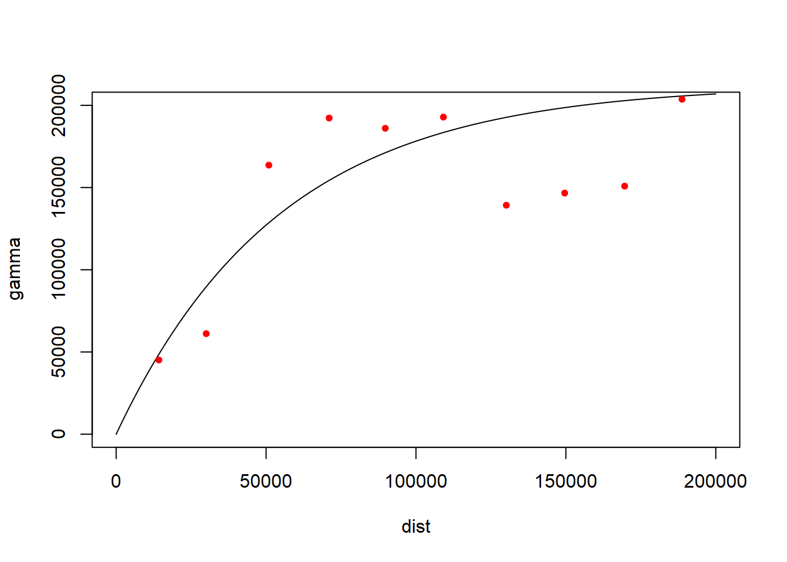
FIGURE 5.14: Fitted variogram
The list of twenty variogram models can be provided with vgm(). We’ll try spherical with "Sph" (Figure 5.15).
## short long
## 1 Nug Nug (nugget)
## 2 Exp Exp (exponential)
## 3 Sph Sph (spherical)
## 4 Gau Gau (gaussian)
## 5 Exc Exclass (Exponential class/stable)
## 6 Mat Mat (Matern)
## 7 Ste Mat (Matern, M. Stein's parameterization)
## 8 Cir Cir (circular)
## 9 Lin Lin (linear)
## 10 Bes Bes (bessel)
## 11 Pen Pen (pentaspherical)
## 12 Per Per (periodic)
## 13 Wav Wav (wave)
## 14 Hol Hol (hole)
## 15 Log Log (logarithmic)
## 16 Pow Pow (power)
## 17 Spl Spl (spline)
## 18 Leg Leg (Legendre)
## 19 Err Err (Measurement error)
## 20 Int Int (Intercept)## model psill range
## 1 Nug 0.0 0.00
## 2 Sph 183011.2 90689.21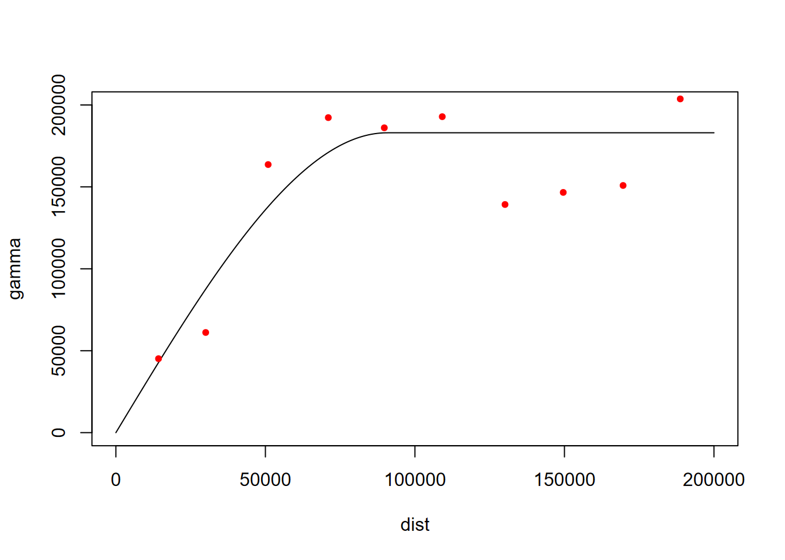
FIGURE 5.15: Spherical fit
The exponential model at least visually looks like the best fit, so we’ll use the fse model we created first (Figure 5.16).
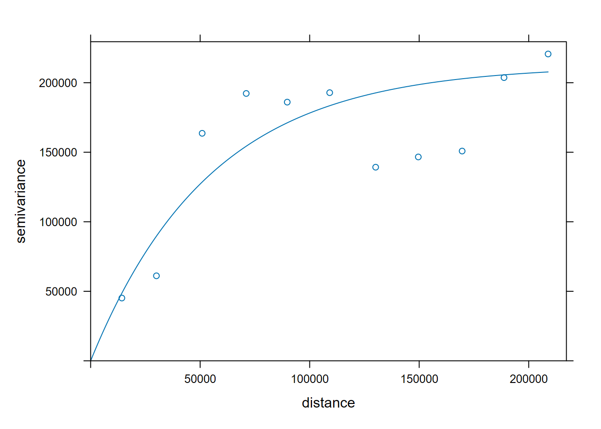
FIGURE 5.16: Exponential model
5.6.3 Ordinary Kriging
So we’ll go with the fve model derived using an exponential form to develop an ordinary Kriging prediction and variance result. The prediction is the interpolation, and the variance shows the areas near the data points where we should have more confidence in the prediction; this ability is one of the hallmarks of the Kriging method (Figure 5.17).
kr <- gstat(formula=PRECIPITATION~1, locations=~x+y, data=d, model=fve)
kp <- interpolate(r, kr, debug.level=0)
ok <- mask(kp, vr)
names(ok) <- c('prediction', 'variance')
plot(ok)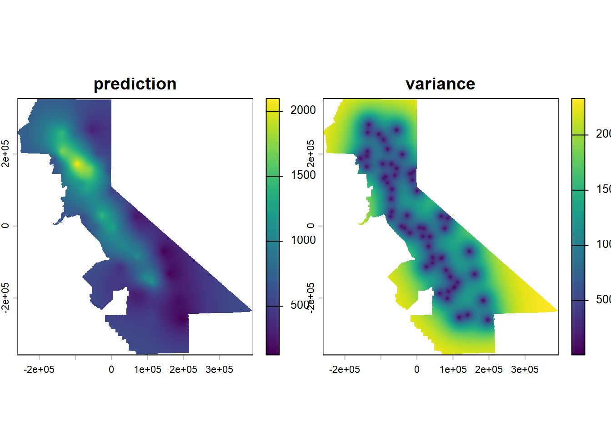
FIGURE 5.17: Ordinary Kriging
Clearly the prediction provides a clear pattern of precipitation, at least for the areas with low variance. The next step would be to do a cross-validation to compare its RMSE with IDW and other models, but we’ll leave that for later.
To learn more about these interpolation methods and related geostatistical methods, see http://rspatial.org/terra/analysis/4-interpolation.html, Nowosad (n.d.), and the gstat user manual at http://www.gstat.org/gstat.pdf .
5.7 Exercises: Spatial Interpolation
Exercise 5.1 We’re going to create a couple of interpolations of California climate variables, so start by building CAclimate sf from the 908277.csv file in the sierra folder; this csv has stations from all of California. Note that you should use na.rm=T for summarizations of both MLY-PRCP-NORMAL and MLY-TAVG-NORMAL, and since there are some weird extreme unrealistic negative numbers for these, also filter for PRECIPITATION > 0 and TEMPERATURE > -100 – other values don’t exist on our planet, much less California. There are also some “unknown” values in LATITUDE, LONGITUDE, and ELEVATION, so also filter for LATITUDE != "unknown". (These low negative values plus codes like “unknown” are just other ways of saying NA). Create a plot of your points colored by PRECIPITATION. You can either use ggplot2 or tmap. Note that LATITUDE, LONGITUDE and ELEVATION get read in as chr, so you’ll want to use as.numeric with them in the summarize section, so code like LATITUDE = first(as.numeric(LATITUDE)).
Exercise 5.2 Create Voronoi polygons of precipitation (Figure 5.18) Note that the voronoi tool is in terra so the data need to be converted to S4 objects with vect(). Then rasterize the resulting polygons, remembering that the coordinates are in decimal degrees so res=0.01 would probably be a better setting. (Extra credit: what shape will the cells be on the map? Remember that we’re working in decimal degrees, but the map is visually projected by the plotting system since it understands geospatial coordinate systems. Experiment with the res setting to visualize this.)
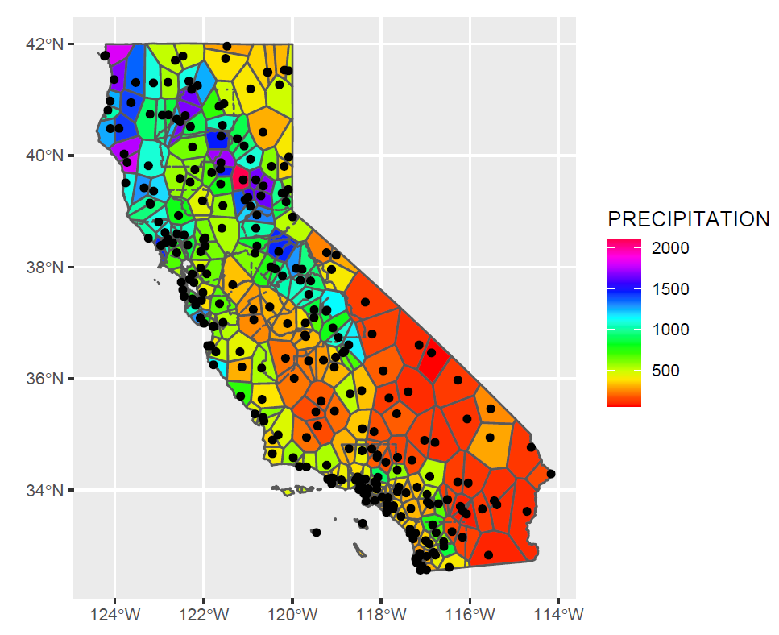
FIGURE 5.18: Voronoi polygons of precipitation (goal)
Exercise 5.3 Use gstat to create an IDW interpolation of the same data, as we did earlier for the sierra data, creating a data frame d, but now from CAclimateT (Figure 5.19).
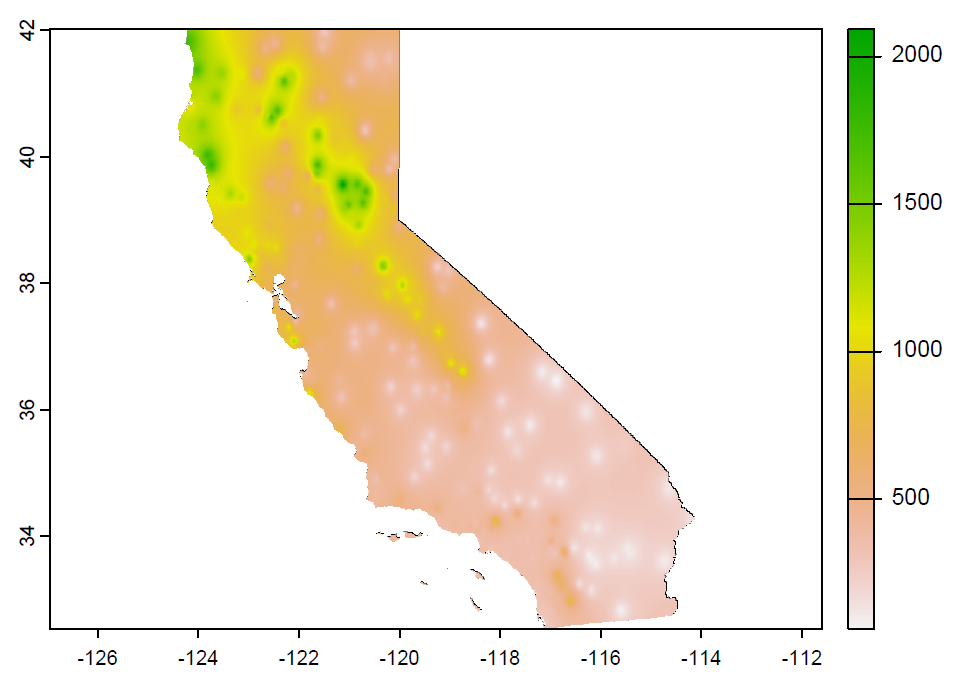
FIGURE 5.19: IDW (goal)
Exercise 5.4 Use the IDW interpolator from the same data, but use ELEVATION instead of PRECIPITATION. Then create a hillshade from it using the terra::shade function (since the interpolator will return an SpatRaster. Then compare it with "ca_hillsh_WGS84.tif" from the external data.
Exercise 5.5 Hillshade of Voronoi station elevations. Optionally, how about a hillshade created from a voronoi of elevation? Remember that the hillshade above is created from point data that happens to have elevation data at the stations, and the Voronoi polygons are simply flat “plateaus” surrounding the weather stations.
Exercise 5.6 Create a linear trend surface of PRECIPITATION in California from the same data.